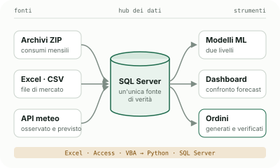
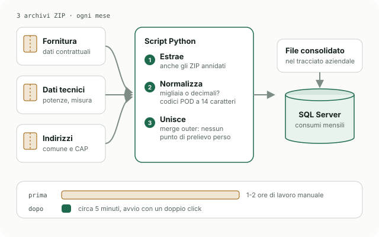
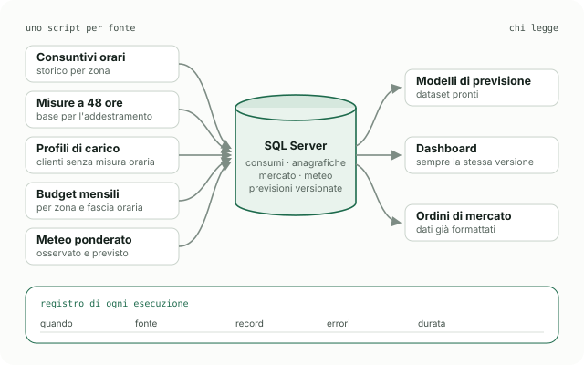
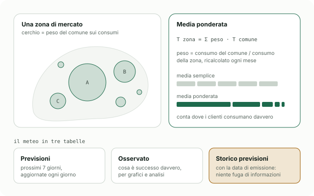
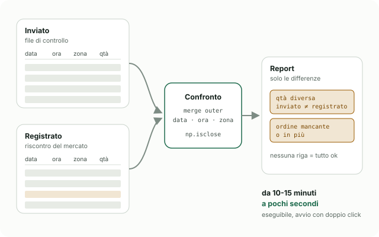

Quattro volte i dati
Con il passaggio del mercato del giorno prima alla risoluzione quart'oraria, una singola utenza passa da 8.760 a 35.040 misure l'anno. Ogni processo e ogni modello va ripensato.
La tesi del corso ITS Tecnico Superiore in Digitalizzazione Processi Industriali racconta il lavoro fatto come Supply & Portfolio Manager junior presso un operatore del settore energetico: portare un'infrastruttura nata su Excel, Access e macro VBA verso un database SQL Server al centro, con automazioni in Python, previsioni con machine learning e controlli automatici sugli ordini.

Excel, Access e VBA erano stati per anni una soluzione economica e funzionale. Tre spinte li hanno portati al limite.
Con il passaggio del mercato del giorno prima alla risoluzione quart'oraria, una singola utenza passa da 8.760 a 35.040 misure l'anno. Ogni processo e ogni modello va ripensato.
Ogni procedura aveva il suo foglio e le sue macro: difficile sapere quale fosse il dato aggiornato, chi l'avesse modificato e come fosse stato calcolato.
Previsioni imprecise o ordini sbagliati si traducono in costi di sbilanciamento. Automatizzare i passaggi ripetitivi riduce gli errori e libera tempo per l'analisi.
Ogni mese i consumi effettivi di tutto il portafoglio arrivano dal distributore in tre archivi ZIP: dati di fornitura, dati tecnici e indirizzi. I CSV contenuti hanno convenzioni scomode: il punto vale come separatore delle migliaia in alcune colonne e come decimale in altre, i codici POD hanno lunghezze diverse.
Uno script Python riconosce gli archivi, estrae anche quelli annidati, normalizza colonna per colonna, porta i codici POD a 14 caratteri e unisce i tre insiemi con un merge outer, così nessun punto di prelievo va perso. Il risultato viene caricato nel database e alimenta tutto il resto.

illustrazione · ETLConsumi, anagrafiche, dati di mercato, meteo e previsioni confluiscono in un solo database. La migrazione è stata graduale per non fermare l'operatività: prima i consumi storici, poi le anagrafiche, poi i dati di mercato, con un periodo in cui vecchio e nuovo sistema convivevano e script automatici ne confrontavano i risultati.
Attorno al database c'è un modulo di orchestrazione: uno script Python per ogni fonte, che sa come leggerla, controllarla e caricarla. Ogni esecuzione viene registrata con orario, fonte, numero di record, eventuali errori e durata, e le previsioni sono salvate per versione.

illustrazione · hubUna media semplice delle temperature tratta allo stesso modo una grande città e un piccolo comune. Per le previsioni conta invece dove si trovano i consumi: ogni punto di prelievo viene abbinato al suo comune e alla zona di mercato, e ogni comune pesa in proporzione ai consumi del portafoglio. I pesi si ricalcolano ogni mese, così seguono da soli i clienti che entrano ed escono.
I dati arrivano dalle API di Open-Meteo e sono tenuti in tre tabelle distinte: previsioni dei prossimi sette giorni, osservato e storico delle previsioni con la loro data di emissione. L'ultima serve ad addestrare i modelli solo con ciò che si sapeva davvero in quel momento.

illustrazione · meteoI modelli non sostituiscono il forecast tradizionale: lo affiancano. Sono in fase di test e servono a validare le scelte di chi prepara ogni giorno le allocazioni.
Il primo livello impara l'errore sistematico del forecast tradizionale da calendario e festività (LightGBM, iperparametri con Optuna, ritardo minimo di 48 ore per evitare leakage). Il secondo affina con le variabili meteo ponderate. È l'evoluzione del primo prototipo, un Random Forest per zona.
Un pulsante nel file di lavoro manda le correzioni manuali al database: la dashboard le mostra subito accanto al consuntivo, al forecast tradizionale e ai due modelli.
Un algoritmo cerca negli ultimi due mesi giorni con meteo e calendario simili e propone una curva oraria. La decisione resta umana, ma ogni scostamento diventa visibile.
Dashboard per zona, correzione con machine learning, elaborazione massiva e mappa delle temperature sono raccontate nel case study dedicato agli strumenti di forecasting.
Forecasting energetico →Un ordine mancante o con quantità sbagliate sul mercato elettrico significa pagare l'energia al prezzo di sbilanciamento. Il vecchio controllo era una macro VBA che, oltre il centinaio di righe, impiegava dieci-quindici minuti: proprio nei giorni con ordini su più giorni diventava un collo di bottiglia.
La nuova verifica, riscritta in Python e distribuita come eseguibile, confronta i file di controllo generati insieme agli ordini con i riscontri scaricati dal portale del mercato (MGP e PCE). Il merge outer per data, ora e zona trova sia le quantità diverse sia gli ordini mancanti o in più; il report mostra solo le differenze.
np.isclose)
illustrazione · verificaIl principio della tesi: lo strumento deve essere usabile anche da chi non ha mai visto una riga di Python e non ha intenzione di impararla.
File batch ed eseguibili autonomi: si avviano come un qualsiasi programma, senza installare Python né conoscere percorsi e comandi.
Guide passo-passo senza gergo, messaggi di avanzamento in italiano ed errori in rosso che spiegano cosa è successo e cosa fare.
Le macro sparse in oltre dieci file Excel sono state tradotte in Python con l'aiuto dell'AI generativa e riunite in un pannello di controllo unico, già pronto per il quarto d'ora.
Librerie open source attorno a un database SQL Server: niente soluzioni commerciali preconfezionate, competenze costruite in casa.
Infrastruttura dati, automazioni, dashboard e verifica degli ordini erano operative. I modelli di machine learning erano in fase di test: le previsioni venivano generate e salvate ogni giorno, ma non usate direttamente per gli ordini.
Gli strumenti sono nati per uso interno: codice e dati non sono pubblici e in questa pagina non ci sono nomi, dati aziendali né cifre economiche. I numeri di processo vengono dalla tesi; schemi e tabelle sono illustrazioni schematiche.
Ogni automazione è nata dopo aver capito e svolto a mano il processo: è il metodo che porto anche nel lavoro di oggi.